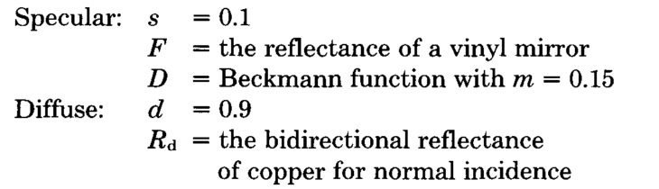
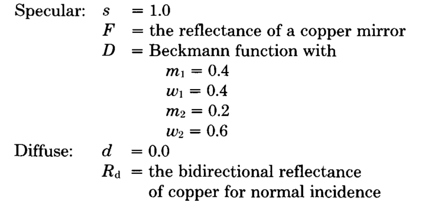
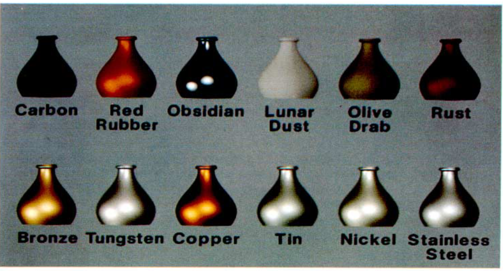

Cook-Torrance Model
Cook-Torrance Model
Published in 1982
The Cook-Torrance model presents a reflectance model that is more general than previous models. [1] Previous models such as Phong gives a plastic appearance, and Cook-Torrance helps to avoid that.
As in previous models, reflection is treated to have three components: ambient, diffuse and specular.
- Ambient – light is assumed to be uniformly incident from the environment and reflected equally in all directions.
- Diffuse – light is scattered equally in all directions.
- Specular – light is concentrated around the mirror direction. (represents highlights)

Figure 1 : the geometry of reflection [1]
The energy of the incident light is expressed as energy per unit time and per unit area of the reflecting surface. The intensity is similar, but is expressed per unit projected area and per unit solid angle. The formula for the energy of incident light is below.

- Ei is the energy of the incident light.
- Ii is the intensity of the incident light.
- N is the unit surface normal.
- L is the unit vetor to the direction of the light source.
- dωi is the solid angle of beam of incident light.

Figure 2 : visualisation of reflection [2]
Since the incoming beam is likely to be reflected over a wide range of angles as shown on figure 2, the reflected intensity in any given direction depends on the incident energy. The ratio of the reflected intensity in a given direction to the incident energy from another direction is called the bidirectional reflectance, R, which is given by:

The reflected intensity reaching the viewer is therefore

- Ir is the intensity of reflected light.
- R is bidirectional reflectance.
The bidirectional reflectance can be split into two components: specular and diffuse. So the bidirectional reflectance can be expressed as:

- s is the fraction of reflectance that is specular.
- d is the fraction of reflectance that is diffuse.
- Rs is the specular bidirectional reflectance.
- Rd is the diffuse bidirectional reflectance.
In addition to direct illumination, we also need to consider ambient reflection, which is just all light that is not from a specific light source. For simplicity, it is assumed that the ambient illumination is uniformly incident. The reflected intensity due to ambient illumination is Ira.
Taking this into account, the total intensity of the light reaching the observer is the sum of the reflected intensities from all light sources plus the reflected intensity from any ambient illumination.

This formula takes into account the effect of different light sources with different intensities and different projected areas which may illuminate a scene.
How reflected colour is determined
Spectral energy distribution is a graph of the energy emitted by an object as a function of different wavelengths.
The spectral energy distribution of the reflected light is calculated by multiplying the spectral energy distribution of the incident light by the reflectance spectrum of the surface. This spectral energy distribution is then converted to the appropriate RGB values for the monitor to display. This is done by using the laws of trichromatic colour reproduction.
When applying the Cook-Torrance model, we need to consider the homogeneity of the material to produce realistic images. In other words, if the material is composed of different materials (i.e. one material at the surface and another beneath the surface), and thus their specular and diffuse components may have different colours.
The specular component depends on how much light is being reflected directly from the surface while the diffuse component depends on how much light penetrates into the material and interacts with the pigments.
Figure 3 shows an image of a copper-coloured vase and a copper vase. Figure 4 shows the parameters given to the left image and figure 5 shows the parameters given to the right image for rendering.

Figure 3a (left): rendered copper-coloured vase, Figure 3b (right): rendered copper vase [1]
Figure 4 : Parameters for rendered image in figure 3a (Copper-coloured vase) [1]
Figure 5 : Parameters for rendered image in figure 3b (Copper vase) [1]
The left image shows a material with a more plastic-like appearance. Its specular component has the colour of its incident light while its diffuse component has the colour of copper.
The right image shows a material with a more metal-like appearance. Its specular component has the colour of copper and the diffuse component is non-existent. The reason for this is that metals conduct electricity. When electromagnetic waves approach the surface, it stimulates the surface electrons which leads to reflection. This results in very little depth penetration of the light so most of the reflection happens at the surface.
The above example shows that there requires a correct treatment of the colour of the specular component in order to obtain a non-plastic appearance.
| Material | s | d | m |
|---|---|---|---|
| Carbon | 0.3 | 0.7 | 0.40 |
| Rubber | 0.4 | 0.6 | 0.30 |
| Obsidian | 0.8 | 0.2 | 0.15 |
| Lunar dust | 0.0 | 1.0 | not used |
| Olive drab | 0.3 | 0.7 | 0.50 |
| Rust | 0.2 | 0.8 | 0.35 |
Table 1 : this table shows parameters for non-metals used in figure 6. [1]
Figure 6 : Examples of different materials rendered using Cook-Torrance
Note: the 6 non-metals were generated with the parameters on table 1 while the metals were generated with the same parameters as figure 3b except for the reflectance spectra.
Advantanges of the Cook-Torrance model
Cook Torrance is better than older models because it was able to avoid giving objects a plastic appearance. This is due to the ambient, diffuse and specular components having better computed colours. Cook-Torrance model takes into account the physical properties of the material being modelled so that it gives a more realistic appearance.
Unlike Phong's model, the Cook-Torrance model is also physically accurate - it takes into account the energy of the incident light and makes sure that the energy of the reflected light is smaller or equal to that.
Limitations of the Cook-Torrance model
This model does not consider the reflection of light from other objects in the environment.
Furthermore, there are parts of the computation (e.g. calculating colours shift with Fresnel equation) that are computationally more expensive than previous models. However, this can be avoided by using an approximation procedure or a lookup table.
References
[1] R. L. Cook and K. E. Torrance, “A reflectance model for computer graphics,” ACM SIGGRAPH Comput. Graph., vol. 15, no. 3, pp. 307–316, 1981.
[2] "Physical based rendering: Cook-Torrance", Codinglabs.net, 2018. [Online]. Available: http://www.codinglabs.net/article_physically_based_rendering_cook_torrance.aspx . [Accessed: 09- Mar- 2018].